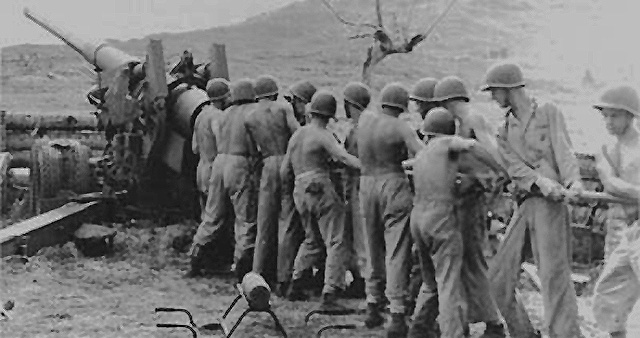

World War II: America at War, Overview
 As previously discussed as militarists took control of the Japanese government, Japanese policies in the Far East became ever more aggressive. Japan sought to create what it called the Greater South East Asia Co-Prosperity Sphere, in which Japanese influence would extend throughout South Asia, Southeast Asia, and the Pacific region. The fancy name meant nothing more than the idea of a Japanese economic empire. Japan needed iron, oil, rubber, tin, and other raw materials, and thus needed to control the economic resources of all of Asia in order to feed her appetite for war. As America became increasingly hostile toward Japanese ambitions and began to tighten trade restrictions, the Japanese warlords began to plot a strategy to confront America. Because the Philippine Islands had become U.S. territory as a result of the Spanish-American War, that American possession due south of Japan lay smack in the middle of Japan's area of interest. Japanese leaders believed it inevitable that conflict would eventually erupt between the Empire and the United States.
As previously discussed as militarists took control of the Japanese government, Japanese policies in the Far East became ever more aggressive. Japan sought to create what it called the Greater South East Asia Co-Prosperity Sphere, in which Japanese influence would extend throughout South Asia, Southeast Asia, and the Pacific region. The fancy name meant nothing more than the idea of a Japanese economic empire. Japan needed iron, oil, rubber, tin, and other raw materials, and thus needed to control the economic resources of all of Asia in order to feed her appetite for war. As America became increasingly hostile toward Japanese ambitions and began to tighten trade restrictions, the Japanese warlords began to plot a strategy to confront America. Because the Philippine Islands had become U.S. territory as a result of the Spanish-American War, that American possession due south of Japan lay smack in the middle of Japan's area of interest. Japanese leaders believed it inevitable that conflict would eventually erupt between the Empire and the United States.
In order to get the upper hand quickly, Japan planned and executed a lightning strike against the Pacific Fleet in Pearl Harbor, Hawaii. The plan was agreed upon in late summer 1945, and soon the Japanese fleet was sailing across a remote area of the North Pacific, preparing to attack Pearl Harbor from the northwest. The story of the attack on Pearl Harbor has been told in detail, and assertions that President Roosevelt knew the attack was coming and did nothing about it have been laid to rest. The Japanese attack was a tactical victory, but it was one of the worst strategic blunders in military history. Although American battleships and cruisers were badly damaged or destroyed, as luck would have it the aircraft carriers were at sea that day and thus were untouched. Because the aircraft carrier became the dominant naval weapon in the Pacific theater during the Second World War, the fact that the aircraft carriers were saved was a crucial factor in the future conduct of the war.

Eyewitness: Attack at Pearl Harbor
Naval History & Heritage: Pear Harbor Raid
FDR's Day of Infamy Speech

 Transcript - Courtesy of the Franklin D. Roosevelt Library Digital Archives.
Transcript - Courtesy of the Franklin D. Roosevelt Library Digital Archives.
 With the attack on Pearl Harbor, the "day of infamy," the United States immediately declared war on Japan. The question then became, what about Germany? Germany, Italy, and Japan had concluded an agreement, the Tripartite Pact, in 1940, which was called the Rome-Berlin-Tokyo Axis. The pact did not require Germany to enter a war started by Japan, such as the one begun by the attack on Pearl Harbor. Nevertheless, it was clear that Germany and Japan saw themselves having a common enemy, and thus on December 11, 1941, Hitler declared war on the United States. As a result, the U.S. found itself confronted with a two-front war—facing two powerful enemies, both of whom had been honing their war-making skills for several years. America and Great Britain shared two common enemies, since the Japanese also attacked British possessions in Asia.
With the attack on Pearl Harbor, the "day of infamy," the United States immediately declared war on Japan. The question then became, what about Germany? Germany, Italy, and Japan had concluded an agreement, the Tripartite Pact, in 1940, which was called the Rome-Berlin-Tokyo Axis. The pact did not require Germany to enter a war started by Japan, such as the one begun by the attack on Pearl Harbor. Nevertheless, it was clear that Germany and Japan saw themselves having a common enemy, and thus on December 11, 1941, Hitler declared war on the United States. As a result, the U.S. found itself confronted with a two-front war—facing two powerful enemies, both of whom had been honing their war-making skills for several years. America and Great Britain shared two common enemies, since the Japanese also attacked British possessions in Asia.
A recent (2001) book, The New Dealers' War by Thomas Fleming, goes into reasons for the German war declaration in detail. Fleming claims that President Roosevelt manipulated Germany into declaring war on the United States, which Germany did on December 11, 1941, three days after the United States declared war on Japan. Fleming lays out the scenario on pages 30–36 of his book. The situation was that Hitler had his hands full with Russia and did not want to force the United States into the war. But Japan urged Germany to join in, and Winston Churchill also wanted the United States in to take pressure off Great Britain, who by then stood all alone on the western front. Fleming writes:
On December 9, 1941, Franklin D. Roosevelt made a radio address to the nation that is seldom mentioned in the history books. It accused Hitler of urging Japan to attack the United States. "We know that Germany and Japan are conducting their military and naval operations with a joint plan," Roosevelt declared. "Germany and Italy consider themselves at war with the United States without even bothering about a formal declaration." This was anything but the case, and Roosevelt knew it. He was trying to bait Hitler into declaring war, or, failing that, persuade the American people to support an American declaration of war on the two European fascist powers (Fleming, The New Dealers' War, Basic Books, 2001, p. 34).
In any case, Germany did declare war. Now the United States was in all the way. Perhaps WWII really was, as President Woodrow Wilson had hoped in 1917, the "war to end all wars." Although for a time after 1945 many in the world contemplated the possibility of World War III, that has not yet occurred.
FDR's Fireside Chat 19: On the War with Japan, December 9, 1941
 Transcript
Transcript